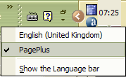

Kabala updated with improved kerning and a few bug fixes. Guru, Kabala, Lekhana, Mandala, Pali, Talapanna, Veluvana were updated with date corrections.
Cankama, Garava, Guru, Mandala, Odana, Pali, and Veluvana have been updated with more glyphs and improved OpenType features. Kerning pairs will be updated and improved gradually with minor updates. The most recently updatd archives include the script file used for adding OpenType features, so if you want to modify them, you can edit the script and run the OpenType Compiler. My
most recent fonts have been updated for Unicode version 6.0, with a full set of Miscellaneous Symbols, Dingbats, and a few more Technical symbols. OpenType features have been added where appropriate for the following:
Alternative Annotation Forms: These use digits and uppercase (or sometimes lowercase) letters enclosed in a large circle. Alternative Fractions: Stacking fractions are useful for typesetting fractional measurements in inches. The full set from 1/2 to 63/64 is included, with some kerning pairs where needed. Discretionary Ligatures: This are primarily intended for decorative use.
Standard Ligatures: These should be enabled by default. Fractions: Traditional fractions from 1/2 to 7/8
Historical Forms: s will be replaced with long s: Historical Ligatures: sb, sh, sk, sl, si ssi, ssl, etc., will be replaced with long s ligatures.
Initial Forms: Talapanna Regular and Bold have decorative drop capitals that use this feature. OldStyle Figures: Designed for use with lowercase and petite capitals. Lining Figures: If a font’s default digits are OldStyle figures the lining figures can be used with All Capitals. Ordinals: Where a letter or letters follow a number, this feature will use a superscript form. Ornaments: A convenient way of accessing dingbats.
- Petite Capitals: smaller capital letters designed to match the x-height of the font.
- Petite Capitals From Capitals: Uppercase letters will also be replaced with Petite Capitals if this feature is used.
Scientific Inferiors: Subscripts that bisect the baseline for use with Chemical formulae.
Small Capitals: these are usually about 70% to 80% of the Caps Height. None of my fonts currently have these glyphs apart from Carita, so this feature will use Petite Capital glyphs. Small Capitals From Capitals: Uppercase letters will also be replaced with Petite Capitals if this feature is used. Stylistic Alternates: symbols * + @ © × † ‡ • have alternate forms.
Superscript: Superscripted digits and letters. Terminal Forms: Greek sigma has a terminal form for use at the end of words.
Titling: Lighter capital letters better suited for use at large point sizes.
OpenType Glyph Substitutions: My fonts use the Private Use area for these extra glyphs. If you use OpenOffice, my Add and Remove Ligatures Macros can be used to add/remove ligatures,
and it could modified to convert regular text to Petite Capitals or Titling Capitals. Titling Capitals are a lighter weight than regular capitals, and more generously spaced. Stacking fractions save space when typesetting measurements. Enable kerning for the best results. Regular fractions are included only for 1/2 to 7/8 as supported by Unicode, but stacking
fractions include a full set up to 63/64. Enable the OpenType Alternative Fractions feature, and type, e.g., 13/32 or 47/64. Updated on 10th January 2010Updated Kabala with italic and bold italic typestyles, a few more glyphs, and additional OpenType
Feature for fractions, stacking fractions, and Greek Petite Capitals. Lekhana is my version of Zapf’s Chancery typeface. It has several distinctive features that set it apart — italic and bold italic typestyles, as well as regular and bold, several ligatures, and the usual wide range of glyphs supporting Basic Greek, and Latin Extended character sets. This is my first font
with OpenType features for using Ligatures, Nut Fractions, OldStyle Figures, Scientific Inferiors, and Superscripts in applications that support them. These additional glyphs can be inserted from the Private Use Area in applications (like Serif™ PagePlus 10 or later) that support Unicode, but not OpenType features. Version 1.1 corrects some mapping errors and adds Nut Fractions.
Veluvana is an attractive brush calligraphic font which has been updated to version 2.0 with some OpenType features. Basic Greek glyphs are from my earlier font, Guru. Designing matching Greek glyphs would take me too long. Updated Verajja to version 3.0. Added schwa, three more currency symbols, Extended Latin petite
capitals, Greek Petite Capitals, improved Double-struck capitals, and more and ligatures. Mandala is a Pāli word meaning “Circle.” This geometric Sans-serif font is ideal for display text and headings. There are now four type styles — regular, italic, bold, and bold italic. There is no character
set for Greek apart from the pi and mu symbols. A wide range of Latin Extended characters is included to support most European languages and Vietnamese. Arrows, maths symbols, general punctuation, miscellaneous symbols, and dingbats are included. Hattha started life as my handwriting drawn with a felt-tip marker. That was scanned into
FontCreator, then the outlines smoothed with the built-in drawing tools. The Bold was then made with the help of the Glyph Transforming Wizard. Accented characters were added with Complete Composites. Arrows, Symbols, and Dingbats were copied from my other fonts, and resized to match. I have now added an italic typestyle with several redesigned glyphs. Bold Italic may not follow for a while as it is a lot of work and not so much used. Verajja Serif includes a full set of Greek Extended Glyphs from the Deja-Vu Open Source font. As with Verajja (Sans), I have used low profile accents and adjusted the default leading to 130% of the font size. Other improvements include maths symbols set to digit width, true superscript/subscripts, and Small Caps in the Private Use area. Created Pāli Keyboard layouts with Microsoft’s Keyboard Layout Creator for typing Latin Extended characters in applications that don’t support keyboard customisation. Tested in Wordpad, Serif Page Plus, and Open Office. Still under development. Please try them out and offer some feedback on my Opera Forum. Disclaimer: Always backup important data and make a restore point before installing new software. No liability can be accepted for using this software, which is provided in good faith. Added Typographical spaces to all fonts except VerajjaPDA. These include em-space (2048 funits), en
-space (1024), 1/3 em space (683), 1/4 em space (512), 1/6 em space (341), figure space, punctuation space, thin space (410), hair space (128 funits), and zero width space. Added a cut-down venison of Verajja as a ZIP archive for PDA users. It contains all of the same Greek and Latin Extended Glyphs as Verajja, but no Arrows, Geometric Symbols, Miscellaneous Symbols, Small
Caps, Ligatures, or Maths Symbols. The fonts take 374K on disk instead of 1.13 Mbytes. |
FAQ1. Are these fonts copyright? Yes. Although they are free, they are subject to copyright under the GNU License. You may modify the fonts, include glyphs in your own fonts, and even sell your modified versions, but if you do they must also be released under the same GNU License terms. Modified versions must be renamed. 2. Can I host your fonts on my web site? No. Please do not redistribute my fonts, but post a link to this page to ensure that everyone can get the latest versions and other new fonts. I regularly update and improve my fonts, and I wish to ensure that users always have the latest versions. 3.
How can I use the OpenType features? If you have a program with OpenType support you can access the OpenType features. PagePlus X5 now supports all of the OpenType features in my fonts and that was used to test the features 4. Can I use OpenType features in OpenOffice? Not yet. However, you can insert any of the special glyphs from the Insert Symbol menu or use a macro to search and replace very quickly.
5 How Did You Add the OpenType Features? I used a free program called OpenType Compiler. See this Tutorial on the High-Logic Forum for details. 6. How Do I install OpenType Fonts? The same way as you install TrueType fonts. Open the Windows Fonts folder and select “Install New Font...” from the file menu. Browse to where the fonts are saved and select them. You can also use a Font Manager such as MainType. 7. How do I open the 7-Zip Archives? Download the 7-Zip archive program from Source Forge. IZArc will also open 7-Zip archives. 8. Why do you use 7-Zip Format?
Because TrueType fonts compress much better with the LZMA format used by 7-Zip than with standard Zip format. Archives are about half the size, which means less server space, less bandwidth usage, and faster download times for users. 7-Zip is free and small. 9. How long does it take to make a font? That depends on how well you want to do it. Anything between a few minutes and a few months. Please see the story of The Chariot Maker. 10. What if I find a bug in your fonts?
I am always glad to hear about bugs or defects in my fonts. If I know about them I can usually fix them very easily. Send me an E-mail with a screen shot and explanation of what you think is wrong or suggestions for improvements. |